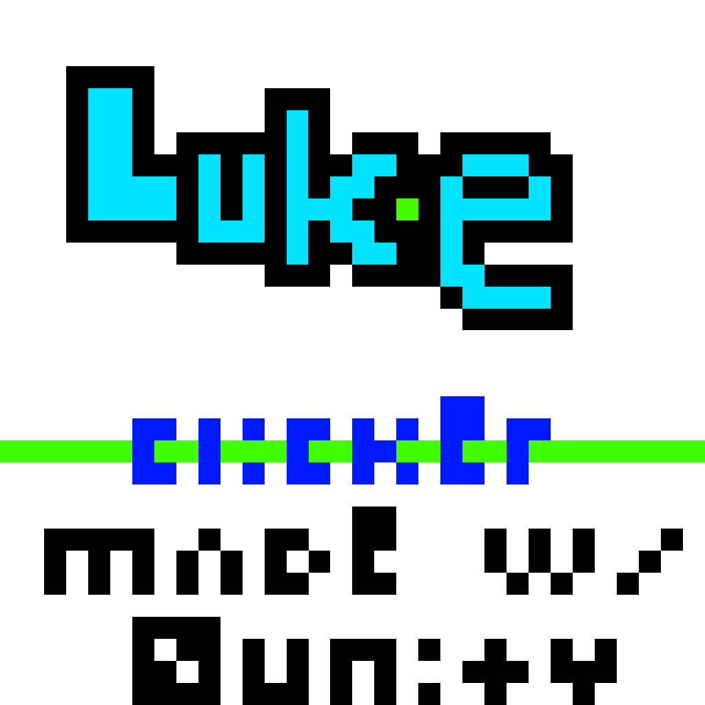

<h1>LukeClicker</h1>

 <body>
     <a href="https://www.youtube.com/@LukeHDPlays">LukeClicker GitHub Repo</a>
      <p>
      The link for the LukeClicker GitHub page where all of the LukeClicker builds are.
      </p>
   </body>
</html>




<!Doctype Html>  
<Html>     
<Head>      
<Title>     
</Title>  
</Head>  
<Body bgcolor="#32CD32">
<br>   

<H1>Luke Clicker R5 Public Beta!</H1>
<p style="font-family: Comic Sans MS"> The Luke Clicker R5 Public Beta is now available for download right here: https://www.mediafire.com/file/vggpq4ml3qcfv9m/B1R5public.7z/file or at the GitHub repository listed above
. I am sure it has bugs so I need YOU guys to test it to make sure it is top notch quality. It's also needed so I can make the first OFFICIAL release of LukeClicker which will be available to download as an APK, and
will obviously be supported for x86 Windows machines. Enjoy :)

<H1>R4 Release!</H1>
  <p style="font-family: Comic Sans MS"> Luke Clicker R4 brings to you these brand new features! -Background Music   -Leaderboard (sort of), and more!! To get on the leaderboard, 
  email me your score and I will put it in on the next release of Luke Clicker


